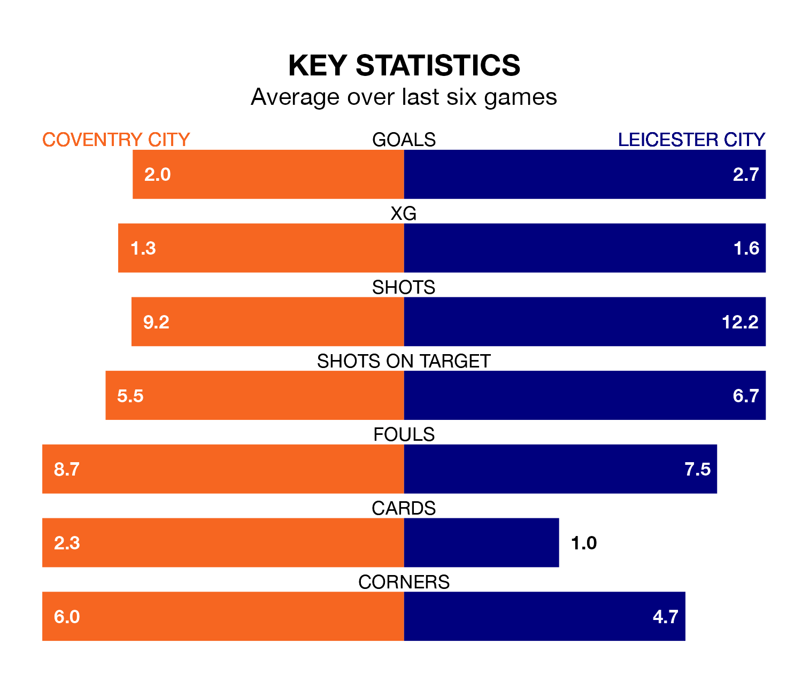

Two of the Championship's meanest defences go head-to-head at the Coventry Building Society Arena on Saturday, when Leicester City visit Coventry City.
No teams have conceded fewer goals than Leicester to date: the away side have let in just 18 goals in 26 games.
The Sky Blues have conceded 28 goals in 26 games, giving them the joint-fourth tightest back line so far this season.
Key to the Foxes' home form has been Mads Hermansen, who has allowed 0.6 goals past him per 90 minutes, compared to 1.2 for Ben Wilson in the opposite net.
Leicester are top of the table after 26 games, of which they have won 21 and drawn two, earning 65 points.
Coventry are seven places behind Leicester City in eighth, with nine wins and 10 draws putting them on 37 points.
Coventry City are in reasonable form in the Championship, with three wins and three draws from their last six games.
With five wins and a draw over that period, the Foxes' form is better – they have taken 16 points from 18, compared to the Sky Blues' 12.
The away team's Kiernan Dewsbury-Hall is the league's most creative player, racking up nine assists in 25 appearances so far this season.
For the hosts, Haji Wright has set up the most goals, having laid on four assists in 26 games.
Coventry's last match was on January 1, a 3-1 win against Middlesbrough, with Tatsuhiro Sakamoto (two) and Wright getting the goals for the Sky Blues.
Leicester beat Huddersfield Town 4-1 last time out, also on January 1, with Thomas Cannon (two), Ricardo Pereira and Stephy Mavididi on the scoresheet.
Updated: 10:50, 10/01/24